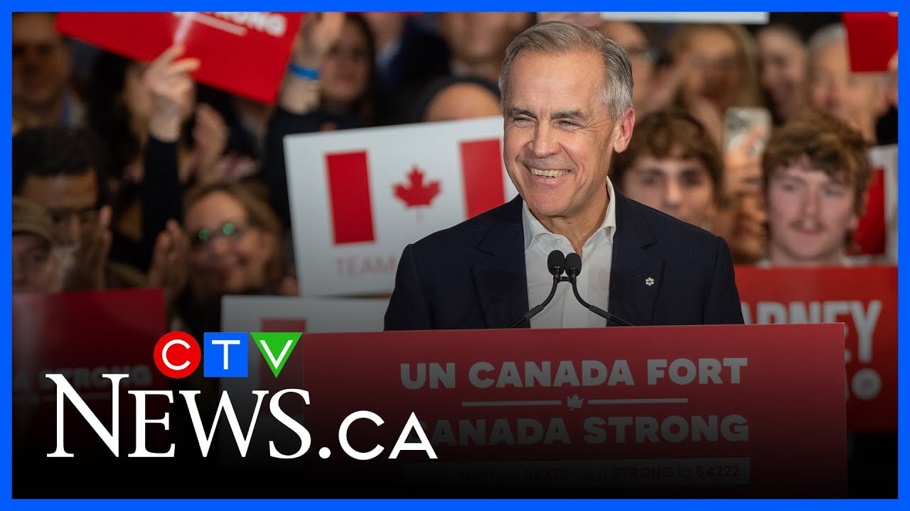

来B站一起耍【Global每日双语简报】
【马克·卡尼带领自由党获胜，CTV新闻宣布 | 突发新闻】
Summary: CTV News declares a Liberal victory, forming Canada's next government, with uncertainty over a majority or minority outcome.
摘要： CTV新闻宣布自由党获胜，将组建加拿大下届政府，但目前尚不确定是多数党还是少数党政府。

⏱️ Estimated Reading Time: 3 min
Our decision desk is just coming up with some data.
我们的决策台刚刚得出一些数据。
We are about to reach a pivotal moment in this unprecedented campaign.
我们即将在这场前所未有的竞选活动中迎来关键时刻。
We are about to make a call.
我们即将宣布结果。
Stand by for major declaration from the CTV News decision desk.
请等待CTV新闻决策台的重要声明。
This will be your next government.
这将是你们的下一届政府。
We are getting the results momentarily.
我们即将获得结果。
Seconds from now it's the time we've all been waiting for.
几秒钟后，这将是我们一直等待的时刻。
And there you have it ctv News decision desk declaring a Liberal win.
就是这样，CTV新闻决策台宣布自由党获胜。
We know that the Liberals will be forming the next government of Canada.
我们知道自由党将组建加拿大下一届政府。
The big question right now Vashi is will it be a majority or a minority.
现在最大的问题是，这将是一个多数党还是少数党政府。
And this is a a live shot you're looking at.
这是你们正在观看的现场画面。
I believe it's at the Liberal head the Liberal Party headquarters in in Ottawa.
我相信这是在渥太华的自由党总部。
I'm assuming there will be some kind of celebration.
我猜测会有某种庆祝活动。
They don't know it yet they don't know it yet but they will soon.
他们还不知道，他们还不知道，但他们很快就会知道。
Uh take a moment give the Liberals their due.
呃，花点时间给予自由党应得的认可。
This is a huge moment for the Liberal Party who were written off the electoral map just 3 months ago four months ago.
这对自由党来说是一个重要时刻，他们在三四个月前还被认为无缘选举。
Uh it's been 20 years since a party has been able to win a forest mandate.
呃，已经20年没有一个政党能够赢得这样的授权。
You're absolutely right to point out that it we don't know yet if it's a minority or it's a majority.
你说得对，我们目前还不知道是少数党还是多数党政府。
But uh to come back from the sort of depths of despair that they faced last year and over the really the last two years and to be able to pull off a win certainly speaks to uh a lot of things.
但是，呃，他们从去年乃至过去两年的绝望低谷中卷土重来并取得胜利，确实说明了很多问题。
Not least of which is the presence of of Donald Trump and uh the sort of ascent of Mark Carney.
其中最重要的因素包括唐纳德·特朗普的存在以及马克·卡尼的崛起。
The the role uh of the sorry the I guess the storyline of him becoming leader and Justin Trudeau stepping aside has certainly worked wonders for the party.
呃，抱歉，我想说的是他成为领袖以及贾斯汀·特鲁多退居二线的故事线确实为自由党创造了奇迹。
Huge impact in Quebec uh 17 pickups at this moment in time 11 seat losses for the block five for the conservatives.
在魁北克产生了巨大影响，目前自由党增加了17个席位，魁人政团失去了11个席位，保守党失去了5个席位。
A big part of this story will be Quebec.
这个故事的重要部分将是魁北克。
It will also help inform whether or not this turns into a majority.
这也将有助于判断这是否会成为一个多数党政府。